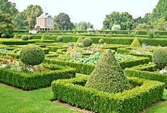
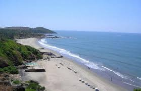

Dutch Garden
ocated in the Nanpura neighborhood in Surat, The Dutch Garden is a major attraction in town which is an oasis of greenery amidst the chaos and cacophony of the city.

Dumas Beach
Dumas beach is an urban beach located along the Arabian Sea, at a distance of 21 km southwest of the Surat city.

Sardar Patel Museum
The Sardar Patel Museum was established in the city of Surat in the year 1890 and has since then has been highly recommended by the people, maintaining a popular position among the Surat tourist attractions.